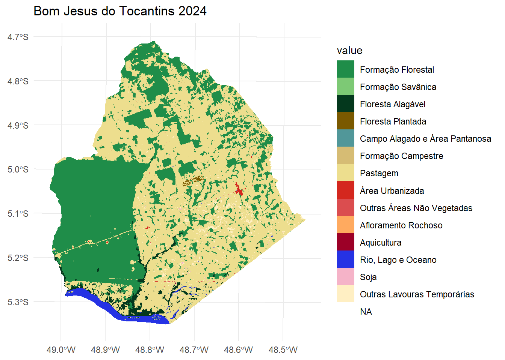
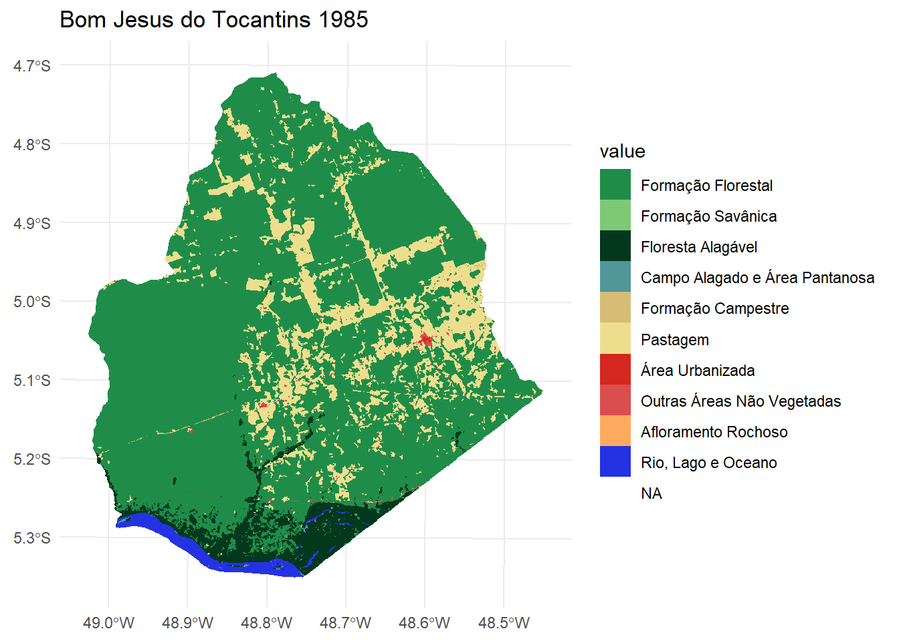
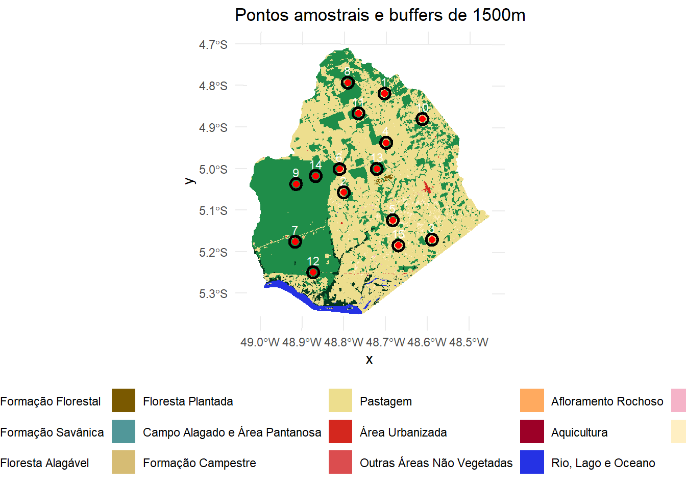
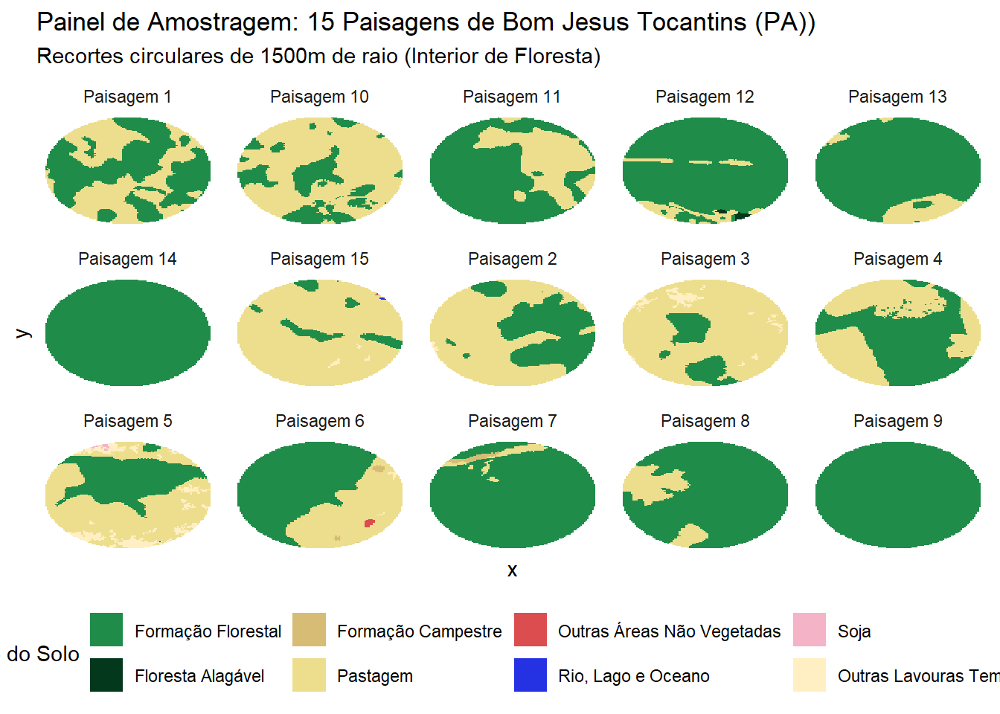
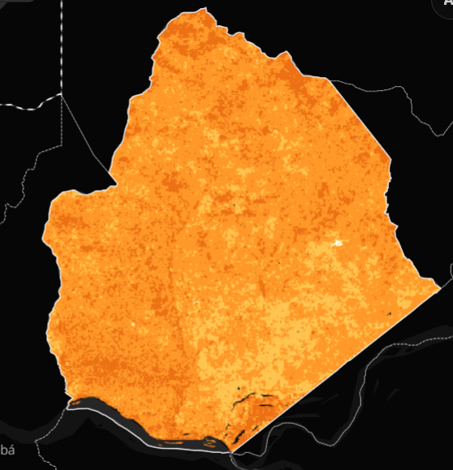
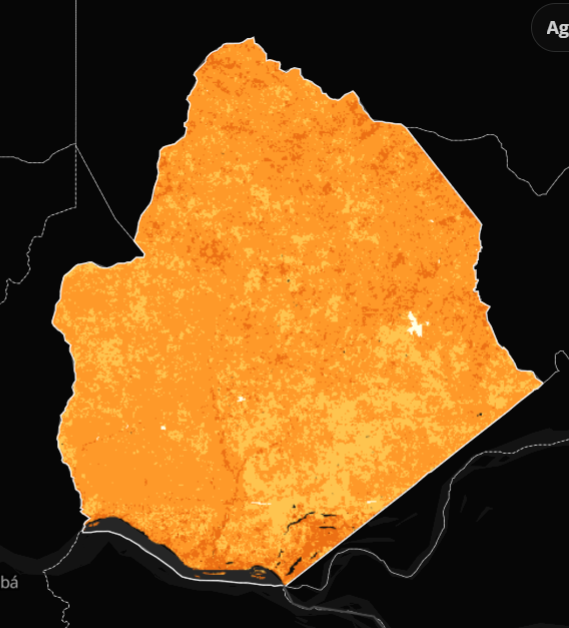
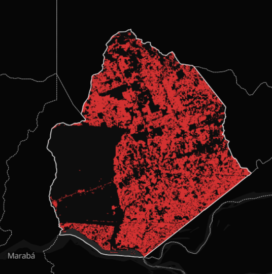
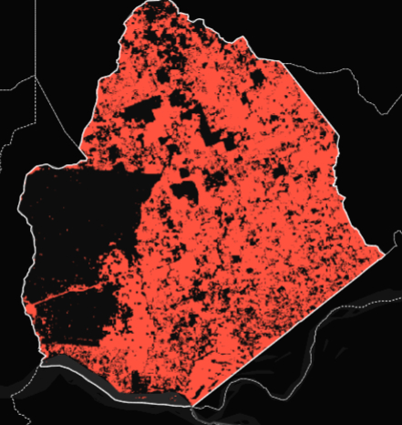
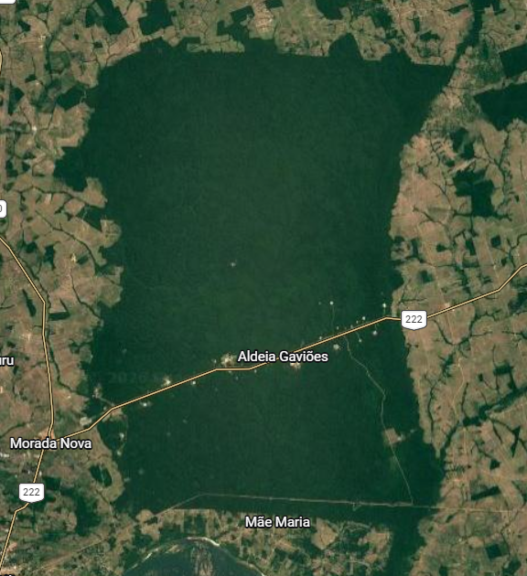

Análise Integrada de Paisagem: [Bom Jesus do Tocantins] ([PA])
Avaliação Final — BO-304 Ecologia de Paisagens
Author
Gabriel Luis Santos Nepomuceno de Lima (20220045938)
Published
June 18, 2026
Parte 1: Análise Descritiva da Paisagem
Escolha do munpicipio
O município escolhido para avaliação foi “Bom Jesus do Tocantins (PA)”. Importante não confundir com um município de mesmo nome no estado do Tocantins. A escolha se deu por conta do histórico do município. Nele existe a TI Mão Maria, terra indigena habitada pelos povos Gavião Akrãtikatêjê, Gavião Kykatejê, Gavião Parkatêjê e Guarani ( Guarani Mbya ); contando com um grande histórico de lutas e disputas. O município já foi vitíma do chamado “arco do desmatamento”, que tranformou sua paisagem por completo. Como vamos ver a seguir, o munícipio teve sua composição e configuração completamente modificadas.
Dados e processamento
Os rasters foram obtidos através da Plataforma MapBiomas, na coleção 10. Foram utilizados dois Rasters para Bom Jesus do Tocantins (PA). O principal para as análises é de 2024 (último ano disponivel na atual data), o segundo é de 1985, o raster mais antigo diponível, servindo de comparação com o atual.
Carregando os Pacotes e Rasters
Code
# Carregando os pacotes necessários library("terra")
terra 1.9.11
Code
library("sf")
Linking to GEOS 3.14.1, GDAL 3.12.1, PROJ 9.7.1; sf_use_s2() is TRUE
── Conflicts ────────────────────────────────────────── tidyverse_conflicts() ──
✖ tidyr::extract() masks terra::extract()
✖ dplyr::filter() masks stats::filter()
✖ dplyr::lag() masks stats::lag()
ℹ Use the conflicted package (<http://conflicted.r-lib.org/>) to force all conflicts to become errors
Anexando pacote: 'tidyterra'
O seguinte objeto é mascarado por 'package:stats':
filter
Code
library("dplyr")cat("✓ Todos os pacotes carregados com sucesso!\n")
✓ Todos os pacotes carregados com sucesso!
Code
# Carregando o Raster de Bom Jesus do Tocantins (PA)mun_2024 <-rast("toca_2024.tif")# Carregando o Raster de Bom Jesus do Tocantins (PA) 1985mun_1985 <-rast("toca_1985.tif")
Com os Rasters carregados, podemos seguir para as configurações.
Code
# Buscando dados do IBGEgeobr::read_municipality(1501576)
Using year/date 2010
Problem connecting to data server. Please try again in a few minutes.
Agora podemos plotar os gráficos e vizualizar o município.
Code
# criando legendas e definindo coreslegenda <-data.frame(value =c(3,4,6,9,11,12,15,24,25,29,31,33,39,41),label =c("Formação Florestal","Formação Savânica","Floresta Alagável","Floresta Plantada","Campo Alagado e Área Pantanosa","Formação Campestre","Pastagem","Área Urbanizada","Outras Áreas Não Vegetadas","Afloramento Rochoso","Aquicultura","Rio, Lago e Oceano","Soja","Outras Lavouras Temporárias" ))cores <-c("#1f8d49", # 3 Formação Florestal"#7dc975", # 4 Formação Savânica"#04381d", # 6 Floresta Alagável"#7a5900", # 9 Floresta Plantada"#519799", # 11 Campo Alagado e Área Pantanosa"#d6bc74", # 12 Formação Campestre"#edde8e", # 15 Pastagem"#d4271e", # 24 Área Urbanizada"#db4d4f", # 25 Outras Áreas Não Vegetadas"#ffaa5f", # 29 Afloramento Rochoso"#9c0027", # 31 Aquicultura"#2532e4", # 33 Rio, Lago e Oceano"#f5b3c8", # 39 Soja"#ffefc3"# 41 Outras Lavouras Temporárias)legenda$Cor <- coreslevels(mun_2024_utm) <- legenda[,1:2]# Vendo o resultado ggplot() +geom_spatraster(data = mun_2024_utm) +scale_fill_manual(values = cores, na.value ="transparent") +labs(title ="Bom Jesus do Tocantins 2024") +theme_minimal()
<SpatRaster> resampled to 500640 cells.

Para 1985
Code
legenda1985 <-data.frame(value =c(3,4,6,9,11,12,15,24,25,29,31,33,39,41),label =c("Formação Florestal","Formação Savânica","Floresta Alagável","Floresta Plantada","Campo Alagado e Área Pantanosa","Formação Campestre","Pastagem","Área Urbanizada","Outras Áreas Não Vegetadas","Afloramento Rochoso","Aquicultura","Rio, Lago e Oceano","Soja","Outras Lavouras Temporárias" ))cores1985 <-c("Formação Florestal"="#1f8d49","Formação Savânica"="#7dc975","Floresta Alagável"="#04381d","Floresta Plantada"="#7a5900","Campo Alagado e Área Pantanosa"="#519799","Formação Campestre"="#d6bc74","Pastagem"="#edde8e","Área Urbanizada"="#d4271e","Outras Áreas Não Vegetadas"="#db4d4f","Afloramento Rochoso"="#ffaa5f","Aquicultura"="#9c0027","Rio, Lago e Oceano"="#2532e4","Soja"="#f5b3c8","Outras Lavouras Temporárias"="#ffefc3")legenda1985$Cor1985 <- cores1985levels(mun_1985_utm) <- legenda1985[,1:2]# Vendo o resultado 1985ggplot() +geom_spatraster(data = mun_1985_utm) +scale_fill_manual(values = cores1985, na.value ="transparent") +labs(title ="Bom Jesus do Tocantins 1985") +theme_minimal()
<SpatRaster> resampled to 500640 cells.

Podemos observar que o municipio perdeu grande parte de sua vegetação nativa, sendo convertido em maior parte por pasto.
Métricas de paisagem
Podemos prosseguir para as análises de paisagem, seguindo o modelo Landscape, Class e Patch.
Começando com o checklandscape
Code
check_landscape(mun_2024_utm)
layer crs units class n_classes OK
1 1 projected m integer 14 ✔
Code
check_landscape(mun_1985_utm)
layer crs units class n_classes OK
1 1 projected m integer 10 ✔
Diversidade de Shannon e Área total
Code
# Métricas para Landscape (paisagem)# diversidade shannon <-lsm_l_shdi(mun_2024_utm)head(shannon)
# A tibble: 1 × 6
layer level class id metric value
<int> <chr> <int> <int> <chr> <dbl>
1 1 landscape NA NA shdi 0.936
Code
# Área totalarea_total <-lsm_l_ta(mun_2024_utm)print(area_total)
# A tibble: 1 × 6
layer level class id metric value
<int> <chr> <int> <int> <chr> <dbl>
1 1 landscape NA NA ta 281868.
Para 1985
Code
# Métricas para Landscape (paisagem) 1985shannon1985 <-lsm_l_shdi(mun_1985_utm)head(shannon1985)
# A tibble: 1 × 6
layer level class id metric value
<int> <chr> <int> <int> <chr> <dbl>
1 1 landscape NA NA shdi 0.753
É possível observar que a diversidade é maior na paisagem atual, fruto do desmatamento e conversão do uso de terra. Em 1985 a paisagem também possuia muita diversidade, mas sua heterogeneidade vinha da diversidade de vegetações nativas. Dessa forma, podemos atestar que mesmo com indices de diversidade próximos, a composição da paisagem foi muito afetada, pois o que compões mudou muito.
Podemos ver isso melhor com as métricas para Classe
Proporção:
Code
# Métricas para class (classe) # Proporção de cada classeproporcao <-lsm_c_pland(mun_2024_utm)print(proporcao)
# A tibble: 14 × 6
layer level class id metric value
<int> <chr> <int> <int> <chr> <dbl>
1 1 class 3 NA pland 38.8
2 1 class 4 NA pland 0.00667
3 1 class 6 NA pland 2.03
4 1 class 9 NA pland 0.108
5 1 class 11 NA pland 0.0965
6 1 class 12 NA pland 0.0894
7 1 class 15 NA pland 55.7
8 1 class 24 NA pland 0.131
9 1 class 25 NA pland 0.0520
10 1 class 29 NA pland 0.00155
11 1 class 31 NA pland 0.00234
12 1 class 33 NA pland 1.71
13 1 class 39 NA pland 0.0763
14 1 class 41 NA pland 1.25
Code
### Criando tabela legendatab <-c("3"="Formação Florestal","4"="Formação Savânica","6"="Floresta Alagável","9"="Floresta Plantada","11"="Campo Alagado e Área Pantanosa","12"="Formação Campestre","15"="Pastagem","24"="Área Urbanizada","25"="Outras Áreas Não Vegetadas","29"="Afloramento Rochoso","31"="Aquicultura","33"="Rio, Lago e Oceano","39"="Soja","41"="Outras Lavouras Temporárias")proporcao_tab <- proporcao %>%mutate(classe_nome = legendatab[as.character(class)]) %>%select(classe_nome, value) %>%rename(Classe = classe_nome,PLAND = value ) %>%arrange(desc(PLAND))proporcao_tab
# A tibble: 14 × 2
Classe PLAND
<chr> <dbl>
1 Pastagem 55.7
2 Formação Florestal 38.8
3 Floresta Alagável 2.03
4 Rio, Lago e Oceano 1.71
5 Outras Lavouras Temporárias 1.25
6 Área Urbanizada 0.131
7 Floresta Plantada 0.108
8 Campo Alagado e Área Pantanosa 0.0965
9 Formação Campestre 0.0894
10 Soja 0.0763
11 Outras Áreas Não Vegetadas 0.0520
12 Formação Savânica 0.00667
13 Aquicultura 0.00234
14 Afloramento Rochoso 0.00155
# A tibble: 14 × 6
layer level class id metric value
<int> <chr> <int> <int> <chr> <dbl>
1 1 class 3 NA ai 97.6
2 1 class 4 NA ai 75
3 1 class 6 NA ai 92.2
4 1 class 9 NA ai 78.6
5 1 class 11 NA ai 62.3
6 1 class 12 NA ai 77.3
7 1 class 15 NA ai 97.4
8 1 class 24 NA ai 91.7
9 1 class 25 NA ai 65.4
10 1 class 29 NA ai 65.5
11 1 class 31 NA ai 96.9
12 1 class 33 NA ai 97.3
13 1 class 39 NA ai 67.7
14 1 class 41 NA ai 72.3
Code
agregacao_tab <- agregacao %>%mutate(classe_nome = legendatab[as.character(class)] ) %>%select( classe_nome, value ) %>%rename(Classe = classe_nome,AI = value ) %>%arrange(desc(AI))agregacao_tab
# A tibble: 14 × 2
Classe AI
<chr> <dbl>
1 Formação Florestal 97.6
2 Pastagem 97.4
3 Rio, Lago e Oceano 97.3
4 Aquicultura 96.9
5 Floresta Alagável 92.2
6 Área Urbanizada 91.7
7 Floresta Plantada 78.6
8 Formação Campestre 77.3
9 Formação Savânica 75
10 Outras Lavouras Temporárias 72.3
11 Soja 67.7
12 Afloramento Rochoso 65.5
13 Outras Áreas Não Vegetadas 65.4
14 Campo Alagado e Área Pantanosa 62.3
Borda por classe:
Code
# Borda por CLASSEborda <-lsm_c_te(mun_2024_utm)print(borda)
# A tibble: 14 × 6
layer level class id metric value
<int> <chr> <int> <int> <chr> <dbl>
1 1 class 3 NA te 3580211.
2 1 class 4 NA te 7642.
3 1 class 6 NA te 612438.
4 1 class 9 NA te 92834.
5 1 class 11 NA te 140744.
6 1 class 12 NA te 81312.
7 1 class 15 NA te 5569821.
8 1 class 24 NA te 47820.
9 1 class 25 NA te 70775.
10 1 class 29 NA te 2567.
11 1 class 31 NA te 1313.
12 1 class 33 NA te 167609.
13 1 class 39 NA te 96894.
14 1 class 41 NA te 1319830.
Code
#criando tabelaborda_tab <- borda %>%mutate(classe_nome = legendatab[as.character(class)] ) %>%select( classe_nome, value ) %>%rename(Classe = classe_nome,Borda_m = value ) %>%arrange(desc(Borda_m))borda_tab
# A tibble: 14 × 2
Classe Borda_m
<chr> <dbl>
1 Pastagem 5569821.
2 Formação Florestal 3580211.
3 Outras Lavouras Temporárias 1319830.
4 Floresta Alagável 612438.
5 Rio, Lago e Oceano 167609.
6 Campo Alagado e Área Pantanosa 140744.
7 Soja 96894.
8 Floresta Plantada 92834.
9 Formação Campestre 81312.
10 Outras Áreas Não Vegetadas 70775.
11 Área Urbanizada 47820.
12 Formação Savânica 7642.
13 Afloramento Rochoso 2567.
14 Aquicultura 1313.
Para 1985
Code
# Métricas para class (classe) 1985# Proporção de cada classe 1985proporcao1985 <-lsm_c_pland(mun_1985_utm)print(proporcao1985)
# A tibble: 10 × 6
layer level class id metric value
<int> <chr> <int> <int> <chr> <dbl>
1 1 class 3 NA pland 77.1
2 1 class 4 NA pland 0.0141
3 1 class 6 NA pland 5.68
4 1 class 11 NA pland 0.100
5 1 class 12 NA pland 0.148
6 1 class 15 NA pland 14.9
7 1 class 24 NA pland 0.0329
8 1 class 25 NA pland 0.279
9 1 class 29 NA pland 0.00145
10 1 class 33 NA pland 1.69
Code
### Criando tabela legendatab1985 <-c("3"="Formação Florestal","4"="Formação Savânica","6"="Floresta Alagável","9"="Floresta Plantada","11"="Campo Alagado e Área Pantanosa","12"="Formação Campestre","15"="Pastagem","24"="Área Urbanizada","25"="Outras Áreas Não Vegetadas","29"="Afloramento Rochoso","31"="Aquicultura","33"="Rio, Lago e Oceano","39"="Soja","41"="Outras Lavouras Temporárias")proporcao_tab1985 <- proporcao1985 %>%mutate(classe_nome = legendatab1985[as.character(class)]) %>%select(classe_nome, value) %>%rename(Classe = classe_nome,PLAND = value ) %>%arrange(desc(PLAND))proporcao_tab1985
# A tibble: 10 × 2
Classe PLAND
<chr> <dbl>
1 Formação Florestal 77.1
2 Pastagem 14.9
3 Floresta Alagável 5.68
4 Rio, Lago e Oceano 1.69
5 Outras Áreas Não Vegetadas 0.279
6 Formação Campestre 0.148
7 Campo Alagado e Área Pantanosa 0.100
8 Área Urbanizada 0.0329
9 Formação Savânica 0.0141
10 Afloramento Rochoso 0.00145
Borda
Code
# Borda por CLASSE 1985borda1985 <-lsm_c_te(mun_1985_utm)print(borda1985)
# A tibble: 10 × 6
layer level class id metric value
<int> <chr> <int> <int> <chr> <dbl>
1 1 class 3 NA te 3672389.
2 1 class 4 NA te 14448.
3 1 class 6 NA te 933507.
4 1 class 11 NA te 82118.
5 1 class 12 NA te 125401.
6 1 class 15 NA te 3008758.
7 1 class 24 NA te 16537.
8 1 class 25 NA te 221280.
9 1 class 29 NA te 2328.
10 1 class 33 NA te 145371.
Code
#criando tabelaborda_tab1985 <- borda1985 %>%mutate(classe_nome = legendatab1985[as.character(class)] ) %>%select( classe_nome, value ) %>%rename(Classe = classe_nome,Borda_m = value ) %>%arrange(desc(Borda_m))borda_tab
# A tibble: 14 × 2
Classe Borda_m
<chr> <dbl>
1 Pastagem 5569821.
2 Formação Florestal 3580211.
3 Outras Lavouras Temporárias 1319830.
4 Floresta Alagável 612438.
5 Rio, Lago e Oceano 167609.
6 Campo Alagado e Área Pantanosa 140744.
7 Soja 96894.
8 Floresta Plantada 92834.
9 Formação Campestre 81312.
10 Outras Áreas Não Vegetadas 70775.
11 Área Urbanizada 47820.
12 Formação Savânica 7642.
13 Afloramento Rochoso 2567.
14 Aquicultura 1313.
Podemos perceber uma grande diferença na composição da paisagem através da comparção de proporções. Atualmente a maior parte do municipio é composta por Pasto, enquanto em 1985 a maior parte era de vegetação nativa, principalmente de formação florestal.
O nível de borda também aumentou bastante com o desmatamento. Possuímos vários fragmentos pequenos com grandes efeitos de borda, como vamos ver a seguir
Analisando a nível de Patches (fragmentos)
Áreas
Code
# Métricas para Patch (Nivel de Fragmentos)# Área dos fragmentosareas <-lsm_p_area(mun_2024_utm)head(areas)
# A tibble: 6 × 6
layer level class id metric value
<int> <chr> <int> <int> <chr> <dbl>
1 1 patch 3 1 area 63026.
2 1 patch 3 2 area 1.07
3 1 patch 3 3 area 0.0891
4 1 patch 3 4 area 1.07
5 1 patch 3 5 area 2.41
6 1 patch 3 6 area 7.57
Code
### Criando tabela areas %>%mutate(classe_nome ="Formação Florestal" ) %>%select( classe_nome, id, value ) %>%rename(Classe = classe_nome,Fragmento = id,Area = value )
# A tibble: 3,834 × 3
Classe Fragmento Area
<chr> <int> <dbl>
1 Formação Florestal 1 63026.
2 Formação Florestal 2 1.07
3 Formação Florestal 3 0.0891
4 Formação Florestal 4 1.07
5 Formação Florestal 5 2.41
6 Formação Florestal 6 7.57
7 Formação Florestal 7 0.178
8 Formação Florestal 8 1.51
9 Formação Florestal 9 18.0
10 Formação Florestal 10 4.01
# ℹ 3,824 more rows
Metricas exclusivas para Classe florestal
Code
# Métricas para classe florestalareas %>%filter(class ==3) %>%summarise(area_total =sum(value),n_fragmentos =n(),maior_fragmento =max(value) )
# Distância para o vizinho mais próximoisolamento1985 <-lsm_p_enn(mun_1985_utm)head(isolamento1985)
# A tibble: 6 × 6
layer level class id metric value
<int> <chr> <int> <int> <chr> <dbl>
1 1 patch 3 1 enn 59.7
2 1 patch 3 2 enn 89.6
3 1 patch 3 3 enn 189.
4 1 patch 3 4 enn 189.
5 1 patch 3 5 enn 59.7
6 1 patch 3 6 enn 59.7
Percebemos que a configuração muda bastante com o passar dos anos. Atualmente temos uma paisagem com um grande fragmento, mantido por conta de uma TI. Esse grande fragmento é cortado por uma estrada de ferro e se encontra próximo de outros fragmentos pequenos. À medida que saimos de perto do fragmento 1, a conectividade diminui e o tamanho dos fragmentos também.
A distância entre alguns fragmentos é bem grande, o que pode ser uma barreira para muitos organismos.
Em 1985 Temos fragmentos muito maiores, com uma maior conectividade, falando apenas da formação florestal. O fragmento 1 (a TI) é muito maior e mais bem conectado a todos os outros. A fragmentação e os efeitos de borda são menores. A paisagem é um pouco mais homogenea, por conta da grande cobertura florestal
# A tibble: 14 × 6
Classe PLAND NP AI EDGE ENN_MEAN
<chr> <dbl> <dbl> <dbl> <dbl> <dbl>
1 Pastagem 55.7 213 97.4 19.8 219.
2 Formação Florestal 38.8 1493 97.6 12.7 228.
3 Floresta Alagável 2.03 349 92.2 2.17 282.
4 Rio, Lago e Oceano 1.71 61 97.3 0.595 2233.
5 Outras Lavouras Temporárias 1.25 1034 72.3 4.68 301.
6 Área Urbanizada 0.131 11 91.7 0.170 6102.
7 Floresta Plantada 0.108 26 78.6 0.329 1780.
8 Campo Alagado e Área Pantanosa 0.0965 284 62.3 0.499 353.
9 Formação Campestre 0.0894 107 77.3 0.288 1227.
10 Soja 0.0763 111 67.7 0.344 1248.
11 Outras Áreas Não Vegetadas 0.0520 127 65.4 0.251 1505.
12 Formação Savânica 0.00667 12 75 0.0271 2292.
13 Aquicultura 0.00234 1 96.9 0.00466 NA
14 Afloramento Rochoso 0.00155 5 65.5 0.00911 8288.
Sorteio de pontos
Aqui faremos um sorteio de 15 pontos dentro do Raster de 2024, visando obter, aleatoriamente, 15 buffers de 1500m. Através desses buffers, podemos realizar uma amostragem aleatória da paisagem.
Code
# Realizando o sorteio de pontos# 15 pontos em 2024# Definindo área de sorteio vetor_total <-as.polygons(mun_2024_utm, dissolve =TRUE)municipio_limite <-aggregate(vetor_total)limite_seguro <-buffer(municipio_limite, width =-2000)floresta <- vetor_total[vetor_total$label =="Formação Florestal", ]area_sorteio <-crop(floresta, limite_seguro)if (is.list(area_sorteio)) { area_sorteio <-do.call(rbind, area_sorteio)}if (nrow(area_sorteio) ==0) {stop("Erro: Nenhuma floresta encontrada a mais de 1km da borda.")}# Definindo distância minima de 2000m e sorteando pontosset.seed(1)pontos_finais <-NULLtentativas <-0while(is.null(pontos_finais) ||nrow(pontos_finais) <15) { tentativas <- tentativas +1 cand <-spatSample(area_sorteio, size =1, method ="random")if (nrow(cand) >0) {if (is.null(pontos_finais)) { pontos_finais <- cand } else { dists <-distance(cand, pontos_finais)if (min(dists) >=2000) { pontos_finais <-rbind(pontos_finais, cand) } } }if (tentativas >5000) break}# Aplicando buffers# Verificar CRSif (!identical(crs(pontos_finais), crs(mun_2024_utm))) { pontos_finais <-project(pontos_finais, crs(mun_2024_utm))}buffers <-buffer(pontos_finais, width =1500)buffers$id_paisagem <-1:nrow(buffers)# Extração e processamentoextracao <- terra::extract(mun_2024_utm, buffers)nome_col_raster <-names(extracao)[2]tabela_final <- extracao %>%rename(id_buffer = ID, categoria_bruta =!!sym(nome_col_raster)) %>%group_by(id_buffer) %>%mutate(total_px =n()) %>%group_by(id_buffer, categoria_bruta) %>%summarise(pixels =n(),percentagem = (pixels /first(total_px)) *100,.groups ="drop" ) %>%mutate(Categoria_Limpa =as.character(categoria_bruta)) %>%left_join(legenda %>%select(label, Cor), by =c("Categoria_Limpa"="label"))write.csv(tabela_final, "uso_solo_murici_final.csv", row.names =FALSE)writeVector(pontos_finais, "pontos_final.shp", overwrite=TRUE)# Vizualizando resultado ggplot() +geom_spatraster(data = mun_2024_utm) +scale_fill_manual(values = legenda$Cor, na.value ="white", name ="Uso do Solo") +geom_spatvector(data = buffers, fill =NA, color ="black", linewidth =1) +geom_spatvector(data = pontos_finais, color ="red", size =2, shape =19) +geom_spatvector_text(data = pontos_finais, aes(label =1:15), color ="white", size =3, vjust =-0.8) +labs(title ="Pontos amostrais e buffers de 1500m") +theme_minimal() +theme(legend.position ="bottom")
<SpatRaster> resampled to 500640 cells.

Code
# Painel 5X3lista_recortes <-list()for(i in1:nrow(buffers)) { crop_i <-crop(mun_2024_utm, buffers[i, ]) mask_i <-mask(crop_i, buffers[i, ]) df_i <-as.data.frame(mask_i, xy =TRUE, cells =TRUE) df_i$id_buffer <-paste("Paisagem", i) lista_recortes[[i]] <- df_i}df_painel <-bind_rows(lista_recortes)ggplot(df_painel) +geom_tile(aes(x = x, y = y, fill = label)) +scale_fill_manual(values =setNames(legenda$Cor, legenda$label)) +facet_wrap(~id_buffer, nrow =3, ncol =5, scales ="free") +theme_minimal() +labs(title ="Painel de Amostragem: 15 Paisagens de Bom Jesus Tocantins (PA))",subtitle ="Recortes circulares de 1500m de raio (Interior de Floresta)",fill ="Uso do Solo") +theme(axis.text =element_blank(),axis.ticks =element_blank(),panel.grid =element_blank(),legend.position ="bottom")

Tabela de pontos
Code
# Tabela de Pontoslibrary(purrr)library(dplyr)library(landscapemetrics)lista_metricas <-list()for(i in1:nrow(buffers)) {# recorta a paisagem r_i <-crop(mun_2024_utm, buffers[i, ]) r_i <-mask(r_i, buffers[i, ])# métricas da paisagem shdi <-lsm_l_shdi(r_i)$value# métricas de classe pland <-lsm_c_pland(r_i) np <-lsm_c_np(r_i) ai <-lsm_c_ai(r_i) edge <-lsm_c_ed(r_i) enn <-lsm_c_enn_mn(r_i) tabela_i <-reduce(list( pland %>%select(class, value) %>%rename(PLAND = value), np %>%select(class, value) %>%rename(NP = value), ai %>%select(class, value) %>%rename(AI = value), edge %>%select(class, value) %>%rename(EDGE = value), enn %>%select(class, value) %>%rename(ENN_MEAN = value) ), full_join,by ="class" ) tabela_i <- tabela_i %>%mutate(Paisagem = i,Classe = legendatab[as.character(class)],SHDI = shdi ) lista_metricas[[i]] <- tabela_i}tabela_paisagens <-bind_rows(lista_metricas)print(tabela_paisagens)
Através do sorteio de pontos conseguimos 2 paisagens com cobertura 100%, localizadas dentro do fragmento 1. Por sua vez, numa amostra aleatória podemos pegar paisagens pequenas, praticamente domindadas por pastagem.
Parte 2: Diagnóstico Ecológico
Conectividade e metapopulações
A paisagem de Bom Jesus do Tocantins não favorece o fluxo gênico entre todos os fragmentos. Como demonstrado por diversos artigos, a exemplo de Lima, et . al 2025; populações podem ser isoladas por distância ou barreiras. As matrizes possuem diferentes níveis de permeabilidade, sendo transponíveis ou intransponíveis, a depender da permeabilidade e do organismo em questão, como demonstrado por Rosa, et al. 2016; onde populações de abelhas tiveram melhor desempenho em matrizes agroflorestais, também apresentando um comportamento de fonte-sumidouro, o que pode acontecer em Bom Jesus.
O tipo matriz predominante em Bom Jesus do Tocantins é pouquissímo permeavel. O pasto representa uma grande barreira para a maior parte dos organismos (Zimmermann. 2010). Atualmente, a maior parte do município é composta por pasto. Junto a isso temos uma péssima configuração, com muito fragmentos pequenos. Contudo, o fragmento 1 (Terra Indigena Mãe Maria) é grande e bem preservado, podendo servir como fonte, seguindo o modelo de biogeografia de ilhas. Assim, os fragmentos mais próximos do 1 teriam maior fluxo gênico e os mais afastados, menos. Seguindo esse paradigma, mais próximo do continente = melhor desempenho, podemos observar o fragmento 1 como ponto central.
Essa ideia se suporta por conta das menores distâncias entre os fragmentos na parte noroeste de Bom jesus, tendo o auxilío de manchas verdes como tranpolins para algumas espécies, além dos maiores tamanhos e configurações com menor efeito de borda aparente.
Dessa forma, fragmentos distantes da Terra Indigena Mãe Maria teriam fluxo gênico menor, por conta da maior distância e menor quantidade de tranpolins; junto a um tamanho menor e configurações com maior efeito de borda. Também podemos esperar diferentes desempenhos para cada grupo biológico. Organismos voadores, tolerantes a maiores temperaturas e aridez vão desempenhar melhor que anuros, anelídeos, gastropodes e outros grupos com menor mobilidade e tolerância.
Efeito de borda
O mesmo causador da perda de fluxo gênico também causa o aumento do efeito de borda. Ao fragmentar e habitats e diminuir sua área de extensão, aumentamos o efeito de borda. O fragmento com menor efeito de borda é o 1. Nele podemos esperar encontrar especialistas de interior de floresta, ou até mesmo mamíferos de grande de porte, que possuem uma relação com grandes áreas. Nos fragmentos menores, podemos esperar grande ploriferação de espécies oportunistas, se aproveitando da luz e outros componentes de áreas com alto efeito de borda. O efeito de borda também prejudica a produtividade primária e o estoque de carbono, o que nos leva a acreditar que o fragmento 1 possua maior assimilaçao de carbono, como veremos a seguir.
Produtividade primária e estoque de carbono
Com isso podemos esperar baixa produtiviade primária e um baixo estoque nos fragmentos menores. Coma a conversão de vegetação nativa para pasto, a capacidade de estocar carbono cai imensamente em ambientes Amazônicos (Fearnside. 1998). Como podemos ver, a capacidade de estocar carbono era extremamente alta em 1985 e cai drasticamente para 2024. Devido a a agregação, o estado mais primitivo da floresta, a TI Mãe Maria é mais capaz de estocar carbono, mesmo que não exista grande diferença para outras áreas;


Fluxos biogeoquímicos
As matas ciliares do Bom Jesus foram completamente afetadas pelo desmatamento e a queima. Afetando também as florestas alagadas, ambiente que teve grandes perdas e quase sumiu do mapa. O município ainda é abastecido em partes pelo corpo d’água presente em seu território, mas precisa de ajuda externa para o abastecimento. A qualidade da água também é muito criticada por moradores. Os processos biogeoquímicos do solo também podem estar afetados, tendo em vista que a queima da floresta gera resíduos que permanecem no solo durante muito tempo.

Desmatamento

Fogo
Parte 3: Análise de Ecologia Política
Cadeia de explicação
Bom Jesus do Tocantins é um município localizado na região sudeste do estado do Pará. Essa região é marcada por muitas lutas e forte ação do desmatamento, mineração, grilagem e outros. A população é formada por cerca de 18 mil habitantes (último censo em 2022), marcada por grande informalidade, tendo menos de 2 mil habitantes em empregos formais em 2013. A pirâmide etária se mostra muito larga na base e no corpo, com baixa população idosa; também apresetando baixo IDH (0,589). Com isso, a expectativa de vida é muito baixa do município, por conta da baixa saúde e más condições de trabalho. Não existem dados sobre mortalidade infantil, porém o município é o 9° lugar em internações por diarréia no SUS, sendo 680,5 internações por 100 mil habitantes em 2024.
A supressão de floresta foi veloz a terra ficou concentrada nas mãos de poucos. Os grandes empresários de terra estão envolvidos na política local. Sendo assim eles possuem grande capital financeiro e político. O modelo financeiro do lugar é de uma economia curta. Onde os trabalhadores se matam pra conseguir comprar comida para sobreviver. Os lucros da criação de gado se mantém entre os donos de terra. O pouco de agricultura que sobre sustenta muito poucos.
Enquanto isso, a maior parte do município vive em condições precárias, onde nem mesmo quantificar é facil, tendo em vista a falta de informação para a cidade. Um dos indicares é o baixo IDH (0,589).
Dentro de Bom Jesus, 3 entidades principais lutam entre si. Os indigenas, os integrantes de movimentos sem terra e os grileiros/Grande fazendeiros.
Mapeamento de atores
A Terra Indigena Mãe Maria.
Criada em 1986, previamente a Bom Jesus do Tocantins, através do Decreto nº 93.148 de 20 de agosto de 1986, assinado por Sarney. A terra indigena é cortada pela estrada de ferro dos Carajás e possui uma linha de transmissão a cortando. A empresa Vale afirma pagar uma idenização mensal de 300 mil reais por mês.
Os povos indigenas que Habitam a TI Mãe Maria são os povos gaviões. Que possuem um longo histórico de luta no local.

TI por Satélite
### Sem Terras
Além disso, a região conta com integrantes do MST e outros movimentos, que travam embates constantes. Dois casos importantes se destacam. O primeiro, o Caso da Fazenda Gaúcha. Onde integrantes dos movimentos sem terra buscaram ocupar a fazenda, pedindo por melhores condições, reforma agrária e o fim da violência de campo. O que encontraram foi supressão armada, ferindo mortalmente algumas pessoas
### Grileiros e grandes Latifundiários
Existem denúncias e apotamentos de grilagem de terra, manipulação, corrupção e violência. Até agora, nenhuma das acusações foram provadas, porém, assassinatos e violência de campo são algo comum na área. Os poucos que resolvem denunciar são, geralmente, jornalistas independentes. Os Grandes fazendeiros são os que ganham com todo o caos do lugar. Utilizar da terra para produzir gado e vender para o mercado externo é vantajoso para eles. A medida que eles esgotam a terra, lucram. Se a terra exaurir, vão busar mais, custe o que custar.
Linha do tempo
O município possui uma criação recente, datando de 1988. Por volta da decada de 60, Bom Jesus era pouco habitado e fazia parte de outro municipio. Com o interesse agrário no local, na intenção de estabelecer roças, o município foi populado e posteriormente fundado oficialmente. Como dito antes, a criação da TI Mãe Maria é previa a de Bom Jesus. Contudo, os povos gaviões já eram perseguidos previamente. Ocorreu uma certa tentativa de pacificar os povos gaviões, o que resultou numa perda de 70% da sua população total. Ainda hoje, eles lutam para se reerguerem. Na primeira metade do século XX, os “Gaviões de oeste” se distribuiam em três unidades locais autodenominadas conforme a posição que ocupavam na bacia do rio Tocantins. Uma delas chamou-se Parkatêjê (onde par é pé, jusante; katê é dono; e jê é povo), “o povo de jusante”, enquanto outra, Kyikatêjê (onde kyi é cabeça), “o povo de montante”, porque, no começo do século XX, por motivo de guerra entre as duas, a primeira refugiou-se a montante do rio Tocantins, já no Estado do Maranhão). A terceira unidade, que ficou conhecida como “turma da Montanha” conforme sua autodenominação Akrãtikatêjê (onde akrãti é montanha), ocupava as cabeceiras do rio Capim. A Criação da PA-322, futuramente convertida em BR-222, foi a primeira ligação de Bom Jesus com a transamazôncia. A construção desta rodovia acelerou a ocupação efetiva e desordenada daquela porção da Amazônia, favorecendo a invasão sistemática e crescente da terra dos Gaviões, tanto por agricultores como por obras estatais de infra-estrutura dos projetos que viriam a se instalar na região.
Mais tarde, a terra indígena foi ainda cortada pela linha de transmissão da Eletronorte, originada na Usina Hidroelétrica de Tucuruí, e, em 1982, pela Estrada de Ferro Carajás.
Esses processos levaram a aceleração da tomada de terra.
Os Indigenas em muito foram suprimidos. O dinheiro advindo do acordo com a Vale para construção da Ferrovia (7 milhões) nunca chegou realmente nas mãos dos Gaviões.
Não há muita informação sobre como a terra foi sendo tomada. O que temos são noticías de protestos tanto pelos sem terra, tanto pelos indigenas e os dados da plataforma MapBiomas
Desmatamento
Os Sem-Terra, em especial, relatam invasões em acapamentos, assassinatos, pistolagens e outros tipos de violência.
Parte 4: Proposta de Manejo Integrado
Bom Jesus do Tocantins representa um grande desafio, tendo em vista a natureza do local para carecer de informações. Mas existem alguns passos importantes a serem tomados, visando restruturar um pouco do local.
Diagnóstico integrado
O município de Bom Jesus do Tocantins apresenta problemas que precisam ser resolvidos com prioridade. A destruição de matas ciliares e a pouca conectividade entre os fragmentos representam dois grandes problemas que podem ser resolvidos com manejo. Há também o problema da violência do campo, associada com a grilagem e desmatamento. A proteção da TI Mãe Maria, a criação de uma economia viável, a luta contra a violência e outros objetivos também são necessários.
Objetivos e intervenções
Recuperação das APPS, promovendo o reestabelecimento das matas ciliares, visando minimizar os impactos em corpos d’água, forncecer água de melhor qualidade a longo prazo e restaurar as florestas alagadas. Recuperação de, ao menos, 20% das matas da parte norte do município, visando aumentar a área de fragmentos já existentes e aumentando o habitat fonte. Regulação fundiária visando diminuir a violência em campo. Ação conjunta ao Movimentos Sem-Terra e a regulação fundiária, fornecendo terra e promovendo agriculturas voltadas para o mercado interno, visando diminuir a fome e contruir uma matriz agroflorestal mais tolerante, funcionando como corredor. Regularização do CAR, visando restabelecer as RL’s.
Governança e monitoramento
Monitoramento da vegetação nativa - Da formação florestal nos fragmentos norte - Da APPS ao redor dos corpos d’água, através da vegetação de floresta alagada. Monitorar os indices de conflitos agrários e violência em campo. Monitorar os números de CAR regularizados. Monitorar o estabelcimento e o sucesso de sistesmas agroglorestais
Referências de artigos:
DE ANDRADE LIMA, José Henrique et al. Landscape genetics highlights species-specific ecological influences on gene flow in highland frog populations from northeastern Brazil. Ecological Processes, v. 14, n. 1, p. 57, 2025.
ROSA, Jaqueline Figuerêdo; RAMALHO, Mauro; ARIAS, Maria Cristina. Functional connectivity and genetic diversity of Eulaema atleticana (Apidae, Euglossina) in the Brazilian Atlantic Forest Corridor: assessment of gene flow. Biotropica, v. 48, n. 4, p. 509-517, 2016.
ZIMMERMANN, Beate; PAPRITZ, Andreas; ELSENBEER, Helmut. Asymmetric response to disturbance and recovery: Changes of soil permeability under forest–pasture–forest transitions. Geoderma, v. 159, n. 1-2, p. 209-215, 2010.
FEARNSIDE, Philip M.; BARBOSA, Reinaldo Imbrozio. Soil carbon changes from conversion of forest to pasture in Brazilian Amazonia. Forest ecology and management, v. 108, n. 1-2, p. 147-166, 1998.
 Não existem dados sobre mortalidade infantil, porém o município é o 9° lugar em internações por diarréia no SUS, sendo 680,5 internações por 100 mil habitantes em 2024.
Não existem dados sobre mortalidade infantil, porém o município é o 9° lugar em internações por diarréia no SUS, sendo 680,5 internações por 100 mil habitantes em 2024.